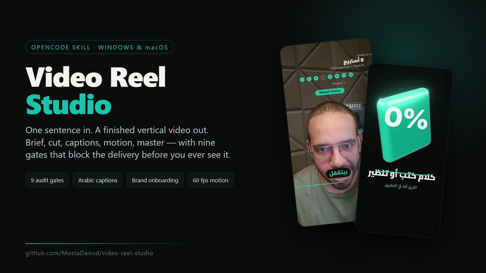
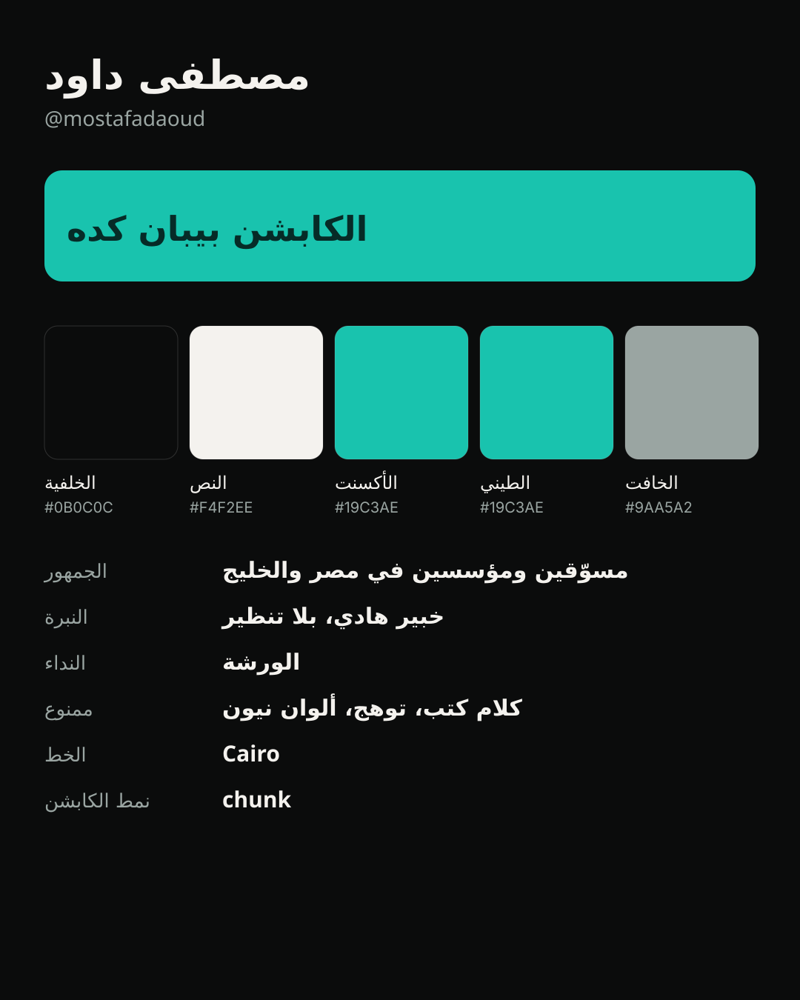
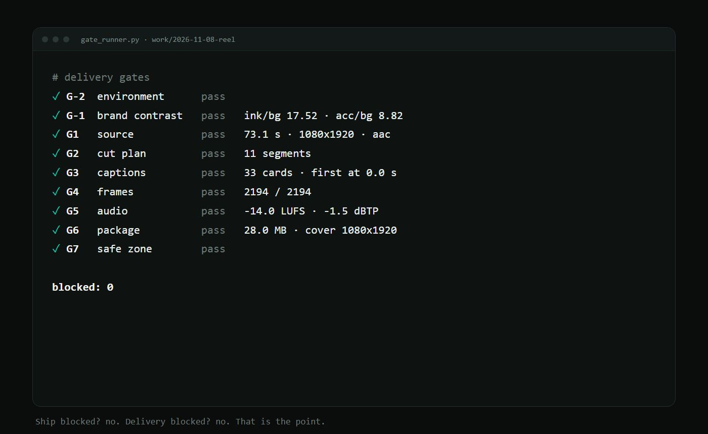

An OpenCode skill that orchestrates cut, Arabic captions, motion, master, cover and thumbnails — then audits the result at twelve checkpoints and refuses to deliver while one is red.
Real output from this pipeline, not mockups. Every file below passed its gates.

The interesting part is not that it renders. It is that it stops.

| Gate | Checks | Blocks |
|---|---|---|
| G-2 environment | python · ffmpeg · node · bash · Chrome · fonts · sibling skills | yes |
| G-1 brand | ink/bg ≥ 4.5 · acc/bg ≥ 3 · onAcc/acc ≥ 4.5 · font · caption style | yes |
| G1 source | readable video + audio, duration > 1 s | yes |
| G2 cut | segments exist, cut duration matches | yes |
| G3 captions | first card ≤ 1.2 s · no empty cards · last inside video · ≤ 8 s · ≤ 9 words | yes |
| G4 frames | rendered = duration × 30 (±2) | yes |
| G4c black frames | no black open, no black run ≥ 0.6 s | yes / warn |
| G4d opening | the picture moves inside the first two seconds | yes / warn |
| G5 audio | −15.5…−13 LUFS · true peak ≤ −1.0 dBTP | warn / yes |
| G5b colour | tv range · full bt709 tags · sRGB colr — your iPhone's colours survive | yes / warn |
| G6 package | ≤ 29 MB · cover 1080×1920 · grid + phone preview · .srt | yes / warn |
| G7 safe zone | no text under Instagram's chrome (render twice + diff) | yes |
Prerequisites: Python 3.10+, FFmpeg, Node 18+, Google Chrome, Git. The production skills install separately (upstream, MIT).
# 1 — the six production skills git clone https://github.com/majedphotos/video-ad-editor /tmp/vae mkdir -p ~/.config/opencode/skills cp -r /tmp/vae/{video-ad-editor,montage-video,motion-video,podcast-video,thumbnail-video,review-video} ~/.config/opencode/skills/ # 2 — this skill git clone https://github.com/MostaDaoud/video-reel-studio /tmp/vrs bash /tmp/vrs/install.sh --global # 3 — prove the machine python3 ~/.config/opencode/skills/video-reel-studio/scripts/preflight.py
Then open OpenCode, drop a video, and say «منتج الفيديو ده». It asks one question about your brand, and takes it from there.